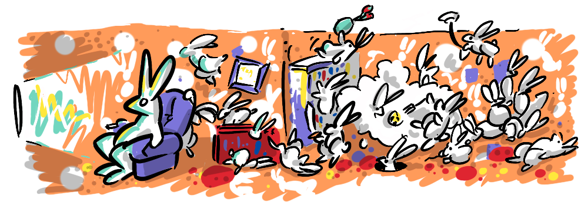
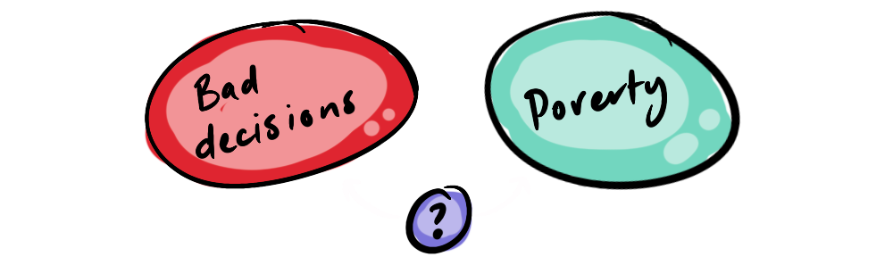

~ a case for giving money to those who are bad with money ~
This is a short lesson, but one I return to again and again—a lesson I learned from Rutger Bregman in his book Utopia for Realists.
It's easy to believe that poor people are poor because they make bad decisions.
Firstly, this assumption helps us make sense of why poverty exists, because we know from experience that bad decisions lead to bad outcomes. It gets us off the hook for living happily alongside poverty, after all, we are where we are in life because we have made better decisions than those who are not doing as well...
"Poverty is a personality defect." - Margaret Thatcher
Secondly, we see evidence of poor people making bad decisions. We see homeless people being unproductive, we see poor teenagers dropping out of high school at a higher rate, and we see crime and anti-social behavior accruing in low socio-economic regions. However, as discussed in Saving Lives Reduces Over-Population, correlation isn't causation, and sometimes a counter-intuitive cause is at play.

In fact, poor people make worse decisions than they would otherwise because they are poor.
This has been demonstrated in two studies by a Princeton research team led by Eldar Shafir.
The first study looked at 464 Indian sugar cane farmers who were paid a subsistence wage throughout the year and then received a large lump sum after harvest, essentially making them poor for part of the year and rich for another part. This unique opportunity allowed researchers to test the same individuals in two very different financial situations.
Shafir's team tested the farmers' IQ before harvest, during the time they were most poor, and after harvest, when they were flush with cash. They found that in the test after the harvest, their IQ scores increased by 13 points!
In the second study, researchers approached people in a shopping mall in New Jersey and asked half of them to imagine receiving a mechanic's bill for $150, and the other half, a bill for $1500. Even though the bill was fictional, priming the participants with this level of financial stress resulted in significantly lower test scores for those who were both less well off and were given the more expensive bill.
"... when they thought about the hard scenarios, people at the lower end of the income scale performed significantly worse on both cognitive tests, while the rich participants were unfazed." - Morgan Kelly (Princton. Office Of Communications)
The researchers point out that stress itself doesn't so much impede intelligence, but rather directs cognitive resources to more pressing concerns, away from longer term or less quantifiable goals.
No post concerning IQ is complete without a nod to the Flynn Effect, whereby IQ increases steadily over generations, which is in line with the causal relationship we are discussing between wealth and intelligence. The Flynn Effect is correlated with increases in GDP, so, on a population-wide level, as societal wealth increases, intelligence also increases. Although this could be due to a number of other reasons.

If it is true that poverty reduces intelligence (temporarily), this could well result in bad decision-making, leading to a vicious cycle. Historically, the approach has been to address financial literacy with education, but what good will this do if the population's ability to think and understand is severely impaired, as shown by the research?
Rutger Bregman suggests that providing a Universal Basic Income will address this financial stress, enabling people to make better financial decisions. While UBI is too large a topic to cover in this post, it is just one of many "direct giving" initiatives that are being acknowledged for their effectiveness. The old intuitions that poverty is a necessary incentive to work, or that "hand-outs" create laziness, are being overturned by more empirical and less punitive approaches.
"Poverty isn't a lack of character, it's a lack of cash." - Rutger Bregman
The finding that poverty causes a temporary drop in IQ is something that turned my conception of the poor, and decision-making in general, on its head. I have found use for this piece of information in many arguments and discussions when making the case for greater compassion, in a way that is a win-win. I hope you find it useful too.